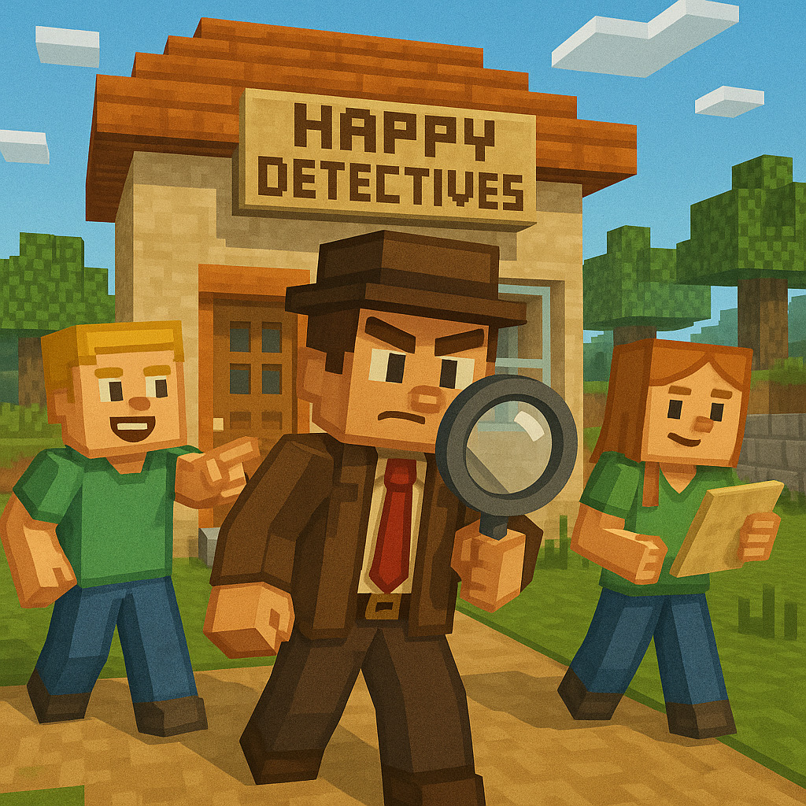

<!DOCTYPE html>
<html lang="zh-TW">
<head>
    <meta charset="UTF-8">
    <meta name="viewport" content="width=device-width, initial-scale=1.0">
    <title>快樂能量偵探社：誤會怪獸的逆襲</title>
    <!-- 更新為指定版本的 React 與 ReactDOM 以解決載入錯誤 -->
    <script crossorigin src="https://unpkg.com/react@18.2.0/umd/react.development.js"></script>
    <script crossorigin src="https://unpkg.com/react-dom@18.2.0/umd/react-dom.development.js"></script>
    <script src="https://unpkg.com/@babel/standalone/babel.min.js"></script>
    <script src="https://cdn.tailwindcss.com"></script>
    <style>
        @import url('https://fonts.googleapis.com/css2?family=Noto+Sans+TC:wght@400;700&display=swap');
        body {
            font-family: 'Noto Sans TC', sans-serif;
            background-color: #f0fdf4;
        }
        .fade-in {
            animation: fadeIn 0.5s ease-in-out;
        }
        @keyframes fadeIn {
            from { opacity: 0; transform: translateY(10px); }
            to { opacity: 1; transform: translateY(0); }
        }
        .progress-bar {
            transition: width 0.3s ease-in-out;
        }
    </style>
</head>
<body>
    <div id="root"></div>

    <script type="text/babel">
        const { useState, useEffect } = React;

        // --- Icon Components ---
        const IconBase = ({ children, className }) => (
            <svg xmlns="http://www.w3.org/2000/svg" width="24" height="24" viewBox="0 0 24 24" fill="none" stroke="currentColor" strokeWidth="2" strokeLinecap="round" strokeLinejoin="round" className={className}>{children}</svg>
        );
        const Search = (props) => <IconBase {...props}><circle cx="11" cy="11" r="8"></circle><line x1="21" y1="21" x2="16.65" y2="16.65"></line></IconBase>;
        const Lock = (props) => <IconBase {...props}><rect x="3" y="11" width="18" height="11" rx="2" ry="2"></rect><path d="M7 11V7a5 5 0 0 1 10 0v4"></path></IconBase>;
        const Unlock = (props) => <IconBase {...props}><rect x="3" y="11" width="18" height="11" rx="2" ry="2"></rect><path d="M7 11V7a5 5 0 0 1 9.9-1"></path></IconBase>;
        const Key = (props) => <IconBase {...props}><path d="M21 2l-2 2m-7.61 7.61a5.5 5.5 0 1 1-7.778 7.778 5.5 5.5 0 0 1 7.777-7.777zm0 0L15.5 7.5m0 0l3 3L22 7l-3-3m-3.5 3.5L19 4"></path></IconBase>;
        const Ghost = (props) => <IconBase {...props}><path d="M9 10h.01"></path><path d="M15 10h.01"></path><path d="M12 2a8 8 0 0 0-8 8v12l3-3 2.5 2.5L12 19l2.5 2.5L17 19l3 3V10a8 8 0 0 0-8-8z"></path></IconBase>;
        const ArrowRight = (props) => <IconBase {...props}><line x1="5" y1="12" x2="19" y2="12"></line><polyline points="12 5 19 12 12 19"></polyline></IconBase>;
        const FileText = (props) => <IconBase {...props}><path d="M14 2H6a2 2 0 0 0-2 2v16a2 2 0 0 0 2 2h12a2 2 0 0 0 2-2V8z"></path><polyline points="14 2 14 8 20 8"></polyline><line x1="16" y1="13" x2="8" y2="13"></line><line x1="16" y1="17" x2="8" y2="17"></line><polyline points="10 9 9 9 8 9"></polyline></IconBase>;
        const CheckCircle = (props) => <IconBase {...props}><path d="M22 11.08V12a10 10 0 1 1-5.93-9.14"></path><polyline points="22 4 12 14.01 9 11.01"></polyline></IconBase>;
        const XCircle = (props) => <IconBase {...props}><circle cx="12" cy="12" r="10"></circle><line x1="15" y1="9" x2="9" y2="15"></line><line x1="9" y1="9" x2="15" y2="15"></line></IconBase>;
        const User = (props) => <IconBase {...props}><path d="M20 21v-2a4 4 0 0 0-4-4H8a4 4 0 0 0-4 4v2"></path><circle cx="12" cy="7" r="4"></circle></IconBase>;
        const MessageCircle = (props) => <IconBase {...props}><path d="M21 11.5a8.38 8.38 0 0 1-.9 3.8 8.5 8.5 0 0 1-7.6 4.7 8.38 8.38 0 0 1-3.8-.9L3 21l1.9-5.7a8.38 8.38 0 0 1-.9-3.8 8.5 8.5 0 0 1 4.7-7.6 8.38 8.38 0 0 1 3.8-.9h.5a8.48 8.48 0 0 1 8 8v.5z"></path></IconBase>;
        const Sun = (props) => <IconBase {...props}><circle cx="12" cy="12" r="5"></circle><line x1="12" y1="1" x2="12" y2="3"></line><line x1="12" y1="21" x2="12" y2="23"></line><line x1="4.22" y1="4.22" x2="5.64" y2="5.64"></line><line x1="18.36" y1="18.36" x2="19.78" y2="19.78"></line><line x1="1" y1="12" x2="3" y2="12"></line><line x1="21" y1="12" x2="23" y2="12"></line><line x1="4.22" y1="19.78" x2="5.64" y2="18.36"></line><line x1="18.36" y1="5.64" x2="19.78" y2="4.22"></line></IconBase>;
        const BookOpen = (props) => <IconBase {...props}><path d="M2 3h6a4 4 0 0 1 4 4v14a3 3 0 0 0-3-3H2z"></path><path d="M22 3h-6a4 4 0 0 0-4 4v14a3 3 0 0 1 3-3h7z"></path></IconBase>;
        const ImageOff = (props) => <IconBase {...props}><line x1="1" y1="1" x2="23" y2="23"></line><path d="M21 21l-2-2m-3.28-3.28A6 6 0 0 0 12 9a6 6 0 0 0-5.72 4.28"></path><path d="M10 5a2 2 0 1 0 2 2"></path><rect x="3" y="3" width="18" height="18" rx="2" ry="2"></rect><path d="M12 9a2 2 0 0 1 2 2"></path></IconBase>;

        // 遊戲狀態機
        const GAME_STATES = {
            SELECT_STUDENT: 'SELECT_STUDENT',
            INTRO: 'INTRO',
            LEVEL_1: 'LEVEL_1',
            LEVEL_2: 'LEVEL_2',
            LEVEL_3: 'LEVEL_3',
            LEVEL_4: 'LEVEL_4',
            LEVEL_5: 'LEVEL_5',
            FINAL_LOCK: 'FINAL_LOCK',
            SUCCESS: 'SUCCESS'
        };

        // 4組密碼庫 (對應四條故事線)
        const STUDENT_CODES = {
            1: ['4', '7', '1', '8', '9'],
            2: ['3', '6', '7', '5', '1'],
            3: ['2', '5', '7', '1', '6'],
            4: ['9', '0', '4', '8', '3'],
            5: ['4', '7', '1', '8', '9'],
            6: ['3', '6', '7', '5', '1'],
            7: ['2', '5', '7', '1', '6'],
            8: ['9', '0', '4', '8', '3']
        };

        // 四條故事線資料庫
        const STORIES = {
            STORY_A: { // 大隊接力 (1, 5號) - 主角：西西
                title: "大隊接力風波",
                image: "大隊接力風波.jpg", 
                icon: <Search className="w-8 h-8 text-blue-400 z-10"/>,
                hint: "案件：大隊接力比賽輸了，西西不小心跌倒，大家都很生氣...",
                levels: {
                    LEVEL_1: [
                        { title: "步驟一：觀察主角", question: "看照片裡的西西（跌倒的同學），他的樣子看起來怎麼樣？", options: [{id:'A', text:'他坐在地上綁鞋帶，沒什麼事', correct:false}, {id:'B', text:'他低著頭縮成一團，看起來好難過，好像快哭了', correct:true}, {id:'C', text:'他在地上找有沒有螞蟻', correct:false}] },
                        { title: "步驟二：觀察環境", question: "再看看旁邊的同學，他們的手指著西西，臉看起來怎麼樣？", options: [{id:'A', text:'眉毛皺起來，嘴巴張大，好像在罵人', correct:true}, {id:'B', text:'笑咪咪的，在跟他玩遊戲', correct:false}, {id:'C', text:'他們在討論等一下要去福利社買什麼', correct:false}] },
                        { title: "步驟三：判斷氣氛", question: "你覺得現在這群人給人的感覺是？", options: [{id:'A', text:'很開心，大家玩得很愉快', correct:false}, {id:'B', text:'很可怕，好像火山快要爆發了', correct:true}, {id:'C', text:'很安靜，大家都在看書', correct:false}] }
                    ],
                    LEVEL_2: [
                        { title: "步驟一：客觀事實", question: "有同學大喊：「都怪你啦！害我們輸了！」這句話聽起來像？", options: [{id:'A', text:'兇巴巴的責備', correct:true}, {id:'B', text:'溫柔的安慰', correct:false}, {id:'C', text:'開心的讚美', correct:false}] },
                        { title: "步驟二：推論感受", question: "如果你是西西，聽到這句話，心裡會有什麼感覺？", options: [{id:'A', text:'會覺得下次一定會贏，很有精神', correct:false}, {id:'B', text:'心裡酸酸的，覺得自己很糟糕，害了大家', correct:true}, {id:'C', text:'覺得沒關係，反正只是一場比賽', correct:false}] },
                        { title: "步驟三：核心問題", question: "大家都想贏，但是把氣出在西西身上，會有什麼結果？", options: [{id:'A', text:'西西下次會跑得像飛一樣快', correct:false}, {id:'B', text:'大家感情變差，西西以後會更害怕跑步', correct:true}, {id:'C', text:'比賽就會重新開始', correct:false}] }
                    ],
                    LEVEL_3: [
                        { title: "步驟一：確認需求", question: "西西現在最想要聽到什麼話？", options: [{id:'A', text:'「沒關係，我們下次再加油！」', correct:true}, {id:'B', text:'「你如果不跌倒我們就贏了！」', correct:false}, {id:'C', text:'「你回家多練習好不好？」', correct:false}] },
                        { title: "步驟二：預測後果", question: "如果你也跟著大家一起罵他，會發生什麼事？", options: [{id:'A', text:'他會變得更勇敢', correct:false}, {id:'B', text:'他可能會哭出來，以後都不敢參加比賽了', correct:true}, {id:'C', text:'老師會請大家吃糖果', correct:false}] },
                        { title: "步驟三：最佳行動", question: "如果你在旁邊，怎麼做最帥氣？", options: [{id:'A', text:'站在旁邊看戲，不關我的事', correct:false}, {id:'B', text:'走過去扶他起來，問他：「你有沒有受傷？」', correct:true}, {id:'C', text:'趕快跑去跟老師告狀', correct:false}] }
                    ],
                    LEVEL_4: [
                        { title: "步驟一：聆聽姿態", question: "西西哭著想解釋，這時候你應該？", options: [{id:'A', text:'看著他的眼睛，安靜聽他說完', correct:true}, {id:'B', text:'叫他不要找藉口，輸了就是輸了', correct:false}, {id:'C', text:'轉頭就走，不想理他', correct:false}] },
                        { title: "步驟二：核對理解", question: "西西說：「我盡力了，可是腳突然沒力氣...」你可以回他說？", options: [{id:'A', text:'「我知道你很想贏，只是不小心跌倒了，對嗎？」', correct:true}, {id:'B', text:'「理由很多耶，跌倒就是跌倒。」', correct:false}, {id:'C', text:'「喔。」', correct:false}] },
                        { title: "步驟三：表達支持", question: "最後，你可以跟他說這句話讓他心情好一點：", options: [{id:'A', text:'「我們是同一隊的，輸贏一起扛！」', correct:true}, {id:'B', text:'「下次拜託你跑快一點。」', correct:false}, {id:'C', text:'「沒差啦，反正只是玩遊戲。」', correct:false}] }
                    ],
                    LEVEL_5: [
                        { title: "步驟一：覺察念頭", question: "西西心裡想：「我是全班的罪人，大家都討厭我。」這是什麼想法？", options: [{id:'A', text:'這是真的，大家都討厭他', correct:false}, {id:'B', text:'這是因為太難過，所以把自己想得很糟', correct:true}, {id:'C', text:'這是快樂的想法', correct:false}] },
                        { title: "步驟二：尋找證據", question: "我們來幫西西找證據，證明大家沒那麼討厭他：", options: [{id:'A', text:'「其實剛剛小明有扶我起來，並不是『全部人』都討厭我。」', correct:true}, {id:'B', text:'「對啊，我就是跑很慢。」', correct:false}, {id:'C', text:'「反正我以後不要跑步就好了。」', correct:false}] },
                        { title: "步驟三：成長思維", question: "怎樣想會讓心情變好？", options: [{id:'A', text:'「這次跌倒讓我知道誰是好朋友，下次小心一點就好。」', correct:true}, {id:'B', text:'「以後體育課我都請假好了。」', correct:false}, {id:'C', text:'「都是地板太滑的錯。」', correct:false}] }
                    ]
                }
            },
            STORY_B: { // 躲避球 (2, 6號) - 主角：姿姿
                title: "躲避球獨行俠",
                image: "躲避球獨行俠.jpg",
                icon: <User className="w-8 h-8 text-red-400 z-10"/>,
                hint: "案件：體育課打躲避球，姿姿只想自己丟球，都不傳給別人...",
                levels: {
                    LEVEL_1: [
                        { title: "步驟一：觀察主角", question: "看那個拿球的姿姿，他的樣子看起來怎麼樣？", options: [{id:'A', text:'死抓著球不放，眼睛瞪得大大的，好像要把球吃掉', correct:true}, {id:'B', text:'他在找誰還沒摸到球，準備傳給他', correct:false}, {id:'C', text:'他看起來很害怕球', correct:false}] },
                        { title: "步驟二：觀察隊友", question: "其他隊友站在旁邊手垂下來，你看他們的臉？", options: [{id:'A', text:'很興奮，準備要接球了', correct:false}, {id:'B', text:'看起來無聊又失望，覺得自己好像多餘的', correct:true}, {id:'C', text:'他們在聊天講笑話', correct:false}] },
                        { title: "步驟三：判斷氣氛", question: "這隊給人的感覺怎麼樣？", options: [{id:'A', text:'大家感情很好，合作無間', correct:false}, {id:'B', text:'好像只有姿姿一個人在玩，其他人都不重要', correct:true}, {id:'C', text:'大家都很開心', correct:false}] }
                    ],
                    LEVEL_2: [
                        { title: "步驟一：客觀事實", question: "姿姿說：「我來就好，你們太弱了會被打到！」這句話聽起來？", options: [{id:'A', text:'他是為了保護大家', correct:false}, {id:'B', text:'他覺得別人都不行，不讓別人玩', correct:true}, {id:'C', text:'他在討論戰術', correct:false}] },
                        { title: "步驟二：推論感受", question: "被說「太弱」的同學，心裡會有什麼感覺？", options: [{id:'A', text:'覺得心裡受傷，好像被瞧不起', correct:true}, {id:'B', text:'覺得很棒，可以在旁邊休息', correct:false}, {id:'C', text:'覺得姿姿好帥喔', correct:false}] },
                        { title: "步驟三：核心問題", question: "姿姿雖然很強，但如果都不傳球，最後會怎樣？", options: [{id:'A', text:'他會變成超級英雄', correct:false}, {id:'B', text:'大家會不想跟他同一組，輸了也沒人幫他', correct:true}, {id:'C', text:'大家都更喜歡他', correct:false}] }
                    ],
                    LEVEL_3: [
                        { title: "步驟一：確認需求", question: "其他同學其實想要的是什麼？", options: [{id:'A', text:'贏球就好，不用上場沒關係', correct:false}, {id:'B', text:'也想要摸到球，感覺自己是隊伍的一份子', correct:true}, {id:'C', text:'想要趕快下課', correct:false}] },
                        { title: "步驟二：預測後果", question: "如果姿姿繼續這樣都不傳球？", options: [{id:'A', text:'大家會越來越不想跟他玩', correct:true}, {id:'B', text:'大家會把他當偶像', correct:false}, {id:'C', text:'沒差，反正會贏就好', correct:false}] },
                        { title: "步驟三：最佳行動", question: "姿姿怎麼做才會變成人緣好的隊長？", options: [{id:'A', text:'繼續自己丟，展現實力', correct:false}, {id:'B', text:'把球傳給位置好的隊友，跟他說：「你丟丟看，我幫你！」', correct:true}, {id:'C', text:'罵隊友都不會跑位', correct:false}] }
                    ],
                    LEVEL_4: [
                        { title: "步驟一：聆聽姿態", question: "隊友小明鼓起勇氣跟姿姿說：「我也想丟球...」姿姿應該？", options: [{id:'A', text:'停下來看著小明，聽聽他想說什麼', correct:true}, {id:'B', text:'假裝沒聽到繼續丟', correct:false}, {id:'C', text:'笑他說：「你又丟不到。」', correct:false}] },
                        { title: "步驟二：核對理解", question: "姿姿可以怎麼回？", options: [{id:'A', text:'「你是因為也想幫忙贏比賽，才想丟球對嗎？」', correct:true}, {id:'B', text:'「你想害我們輸嗎？」', correct:false}, {id:'C', text:'「你太弱了啦。」', correct:false}] },
                        { title: "步驟三：表達支持", question: "姿姿最後可以說：", options: [{id:'A', text:'「好喔！這球給你丟，沒丟中沒關係！」', correct:true}, {id:'B', text:'「隨便你，輸了不要怪我。」', correct:false}, {id:'C', text:'「這球很重喔你拿不動。」', correct:false}] }
                    ],
                    LEVEL_5: [
                        { title: "步驟一：覺察念頭", question: "弱小的同學心裡想：「我真的很沒用，只會拖累大家。」這是？", options: [{id:'A', text:'對自己沒信心的想法', correct:true}, {id:'B', text:'這是事實，我就是爛', correct:false}, {id:'C', text:'謙虛的表現', correct:false}] },
                        { title: "步驟二：尋找證據", question: "我們來反駁這個想法：", options: [{id:'A', text:'「雖然我不大力，但我很會躲球，這也是幫忙啊！」', correct:true}, {id:'B', text:'「姿姿說得對，我還是不要動好了。」', correct:false}, {id:'C', text:'「以後體育課都請假好了。」', correct:false}] },
                        { title: "步驟三：成長思維", question: "怎麼想會比較有力量？", options: [{id:'A', text:'「只要多練習傳接球，我也會進步，重點是有參與！」', correct:true}, {id:'B', text:'「反正我就是弱，沒救了。」', correct:false}, {id:'C', text:'「當觀眾比較安全。」', correct:false}] }
                    ]
                }
            },
            STORY_C: { // 學業霸凌 (3, 7號) - 主角：跳跳
                title: "看不見的傷口",
                image: "看不見的傷口.jpg",
                icon: <FileText className="w-8 h-8 text-purple-400 z-10"/>,
                hint: "案件：跳跳考不好，有同學笑他，分組也沒人想跟他一組...",
                levels: {
                    LEVEL_1: [
                        { title: "步驟一：觀察主角", question: "發考卷的時候，跳跳在做什麼？", options: [{id:'A', text:'把考卷拿起來給大家看', correct:false}, {id:'B', text:'趕快把考卷蓋起來，頭低低的，好像想躲起來', correct:true}, {id:'C', text:'把考卷撕破丟掉', correct:false}] },
                        { title: "步驟二：觀察同學", question: "旁邊幾個同學在那邊講悄悄話，還看著跳跳笑，這是在幹嘛？", options: [{id:'A', text:'他們在討論功課', correct:false}, {id:'B', text:'他們在說壞話、取笑跳跳', correct:true}, {id:'C', text:'他們在講電視上的笑話', correct:false}] },
                        { title: "步驟三：判斷氣氛", question: "跳跳座位那邊感覺怎麼樣？", options: [{id:'A', text:'很友善，大家都是好朋友', correct:false}, {id:'B', text:'冷冰冰的，感覺很不舒服', correct:true}, {id:'C', text:'很安靜，大家都在看書', correct:false}] }
                    ],
                    LEVEL_2: [
                        { title: "步驟一：客觀事實", question: "有同學說：「欸不要跟他一組啦，他會拉低分數。」這樣說好嗎？", options: [{id:'A', text:'不好，這是排擠同學', correct:true}, {id:'B', text:'很好，這樣才會贏', correct:false}, {id:'C', text:'這是為了大家好', correct:false}] },
                        { title: "步驟二：推論感受", question: "跳跳聽到這些話，心裡除了難過，還會有什麼感覺？", options: [{id:'A', text:'覺得自己很沒用，很孤單，沒人喜歡', correct:true}, {id:'B', text:'覺得同學很有趣', correct:false}, {id:'C', text:'覺得下次要考一百分嚇死大家', correct:false}] },
                        { title: "步驟三：核心問題", question: "這種「開玩笑」其實是說壞話，會有什麼後果？", options: [{id:'A', text:'沒什麼，只是好玩', correct:false}, {id:'B', text:'跳跳心裡會受傷，變得更沒自信，不敢交朋友', correct:true}, {id:'C', text:'跳跳會變聰明', correct:false}] }
                    ],
                    LEVEL_3: [
                        { title: "步驟一：確認需求", question: "跳跳現在最希望的是什麼？", options: [{id:'A', text:'大家不要笑他，把他當成朋友', correct:true}, {id:'B', text:'去補習班上課', correct:false}, {id:'C', text:'轉學不要來了', correct:false}] },
                        { title: "步驟二：預測後果", question: "如果你也跟著一起笑，或者裝作沒看到？", options: [{id:'A', text:'那些欺負人的同學會覺得自己沒錯，繼續欺負他', correct:true}, {id:'B', text:'跳跳會感謝你沒罵他', correct:false}, {id:'C', text:'老師會處理，不用管', correct:false}] },
                        { title: "步驟三：最佳行動", question: "你是正義的小偵探，你可以怎麼做？", options: [{id:'A', text:'大聲罵回去，跟他們吵架', correct:false}, {id:'B', text:'主動跟跳跳說：「跳跳，我們這組還缺人，你來吧！」', correct:true}, {id:'C', text:'私下笑他笨', correct:false}] }
                    ],
                    LEVEL_4: [
                        { title: "步驟一：聆聽姿態", question: "跳跳難過地說：「我也很想考好啊...」你應該？", options: [{id:'A', text:'看著他，點點頭，讓他知道你有在聽', correct:true}, {id:'B', text:'一邊玩手機一邊聽', correct:false}, {id:'C', text:'打斷他說：「你就是不夠用功啦。」', correct:false}] },
                        { title: "步驟二：核對理解", question: "你可以跟他說：", options: [{id:'A', text:'「你已經很努力了，可是分數不好看讓你很難過，對不對？」', correct:true}, {id:'B', text:'「所以你就是笨嘛。」', correct:false}, {id:'C', text:'「沒關係啦下次再說。」', correct:false}] },
                        { title: "步驟三：表達支持", question: "給他一點溫暖的鼓勵：", options: [{id:'A', text:'「分數又不代表一切，你畫畫那麼厲害，我們都知道！」', correct:true}, {id:'B', text:'「加油好嗎？」', correct:false}, {id:'C', text:'「快去讀書啦。」', correct:false}] }
                    ],
                    LEVEL_5: [
                        { title: "步驟一：覺察念頭", question: "跳跳想：「我就是笨蛋，永遠都做不好。」這想法是？", options: [{id:'A', text:'對自己沒信心的想法', correct:true}, {id:'B', text:'聰明的想法', correct:false}, {id:'C', text:'事實就是這樣', correct:false}] },
                        { title: "步驟二：尋找證據", question: "我們來反駁這個想法：", options: [{id:'A', text:'「才怪，我在美術課畫圖第一名耶，我有我的優點。」', correct:true}, {id:'B', text:'「大家都這麼說，應該是對的。」', correct:false}, {id:'C', text:'「考試真的太難了。」', correct:false}] },
                        { title: "步驟三：成長思維", question: "怎麼想會比較好？", options: [{id:'A', text:'「成績只是現在還沒學會，只要找到方法，我也可以進步！」', correct:true}, {id:'B', text:'「我放棄讀書好了。」', correct:false}, {id:'C', text:'「隨便啦。」', correct:false}] }
                    ]
                }
            },
            STORY_D: { // 過度自信/不知悔改 (4, 8號) - 主角：妮妮
                title: "鏡子裡的國王",
                image: "鏡子裡的國王.jpg",
                icon: <Sun className="w-8 h-8 text-yellow-400 z-10"/>,
                hint: "案件：妮妮覺得自己最厲害，做錯事被罵還覺得是別人的錯...",
                levels: {
                    LEVEL_1: [
                        { title: "步驟一：觀察主角", question: "老師在跟妮妮說他做錯事，妮妮的反應是？", options: [{id:'A', text:'手抱在胸前，翻白眼，看別的地方，好像沒在聽', correct:true}, {id:'B', text:'點頭說對不起', correct:false}, {id:'C', text:'緊張得發抖', correct:false}] },
                        { title: "步驟二：觀察他人", question: "看看老師和旁邊的同學，他們的臉色怎麼樣？", options: [{id:'A', text:'很生氣，覺得妮妮怎麼講不聽', correct:true}, {id:'B', text:'覺得妮妮好帥喔', correct:false}, {id:'C', text:'笑得很開心', correct:false}] },
                        { title: "步驟三：判斷氣氛", question: "現在的氣氛怎麼樣？", options: [{id:'A', text:'很和平', correct:false}, {id:'B', text:'很僵硬，好像在吵架', correct:true}, {id:'C', text:'很熱鬧', correct:false}] }
                    ],
                    LEVEL_2: [
                        { title: "步驟一：客觀事實", question: "妮妮說：「明明是他擋路，又不是我的錯！」這代表？", options: [{id:'A', text:'他在找藉口，不承認自己錯了', correct:true}, {id:'B', text:'他是對的', correct:false}, {id:'C', text:'他很委屈', correct:false}] },
                        { title: "步驟二：推論感受", question: "妮妮為什麼要這樣兇巴巴的？心裡可能在想什麼？", options: [{id:'A', text:'他愛面子，怕承認錯誤很丟臉', correct:true}, {id:'B', text:'他真的是大壞蛋', correct:false}, {id:'C', text:'他想講笑話給大家聽', correct:false}] },
                        { title: "步驟三：核心問題", question: "如果做錯事都不承認，最後會怎樣？", options: [{id:'A', text:'大家會覺得他很酷', correct:false}, {id:'B', text:'大家會不相信他，以後沒人想跟他當朋友', correct:true}, {id:'C', text:'老師會更喜歡他', correct:false}] }
                    ],
                    LEVEL_3: [
                        { title: "步驟一：確認需求", question: "妮妮其實需要學會什麼？", options: [{id:'A', text:'學會說對不起，承認錯誤並不丟臉', correct:true}, {id:'B', text:'學會怎麼吵架贏別人', correct:false}, {id:'C', text:'學會怎麼考第一名', correct:false}] },
                        { title: "步驟二：預測後果", question: "如果同學直接罵他：「你很自大耶！」妮妮會怎樣？", options: [{id:'A', text:'會反省自己', correct:false}, {id:'B', text:'會更生氣，罵得更大聲', correct:true}, {id:'C', text:'會馬上道歉', correct:false}] },
                        { title: "步驟三：最佳行動", question: "你是他的好朋友，你可以怎麼跟他說？", options: [{id:'A', text:'「你剛剛那樣做會讓人受傷，如果道歉會更帥喔！」', correct:true}, {id:'B', text:'「你真的很討厭耶。」', correct:false}, {id:'C', text:'不理他', correct:false}] }
                    ],
                    LEVEL_4: [
                        { title: "步驟一：聆聽姿態", question: "當妮妮在辯解的時候，就算你覺得他不對，也要？", options: [{id:'A', text:'先聽他說完，不要急著插嘴', correct:true}, {id:'B', text:'摀住耳朵不聽', correct:false}, {id:'C', text:'大聲吼回去', correct:false}] },
                        { title: "步驟二：核對理解", question: "你可以說：", options: [{id:'A', text:'「你覺得你是為了大家好才那樣做，是嗎？」', correct:true}, {id:'B', text:'「你就是愛狡辯。」', correct:false}, {id:'C', text:'「聽你在亂講。」', correct:false}] },
                        { title: "步驟三：表達支持", question: "最後給他一點建議：", options: [{id:'A', text:'「我知道你是好意，但結果讓別人不高興了，我們一起想想怎麼補救？」', correct:true}, {id:'B', text:'「你沒救了。」', correct:false}, {id:'C', text:'「你好自為之。」', correct:false}] }
                    ],
                    LEVEL_5: [
                        { title: "步驟一：覺察念頭", question: "妮妮心裡想：「認錯就代表我輸了，很丟臉。」這是？", options: [{id:'A', text:'不對的想法，認錯才不丟臉', correct:true}, {id:'B', text:'正確的觀念', correct:false}, {id:'C', text:'有自信的表現', correct:false}] },
                        { title: "步驟二：尋找證據", question: "我們來反駁這個念頭：", options: [{id:'A', text:'「敢承認錯誤的人，大家反而會覺得他很勇敢、很負責。」', correct:true}, {id:'B', text:'「沒錯，絕對不能認輸。」', correct:false}, {id:'C', text:'「面子最重要。」', correct:false}] },
                        { title: "步驟三：成長思維", question: "怎麼想會讓他變成更好的人？", options: [{id:'A', text:'「做錯事沒關係，改過來我就能變得更強！」', correct:true}, {id:'B', text:'「千錯萬錯都是別人的錯。」', correct:false}, {id:'C', text:'「我以後都不要做決定了。」', correct:false}] }
                    ]
                }
            }
        };

        const App = () => {
            const [gameState, setGameState] = useState(GAME_STATES.SELECT_STUDENT);
            const [studentId, setStudentId] = useState(null);
            const [currentStoryId, setCurrentStoryId] = useState(null); 
            const [collectedCodes, setCollectedCodes] = useState([]);
            const [inputCode, setInputCode] = useState(''); 
            const [feedback, setFeedback] = useState(null);
            const [currentSubLevel, setCurrentSubLevel] = useState(0);
            const [showLevelComplete, setShowLevelComplete] = useState(false);

            // 處理學生選擇並分配故事
            const handleStudentSelect = (id) => {
                if (!id) return;
                setStudentId(Number(id));
                let storyKey = 'STORY_A';
                if (id == 2 || id == 6) storyKey = 'STORY_B';
                if (id == 3 || id == 7) storyKey = 'STORY_C';
                if (id == 4 || id == 8) storyKey = 'STORY_D';
                
                setCurrentStoryId(storyKey);
                setGameState(GAME_STATES.INTRO);
                setCollectedCodes([]);
                setInputCode('');
                setCurrentSubLevel(0);
                setShowLevelComplete(false);
            };

            const handleAnswer = (isCorrect, levelKey) => {
                const levelIndexMap = { 'LEVEL_1': 0, 'LEVEL_2': 1, 'LEVEL_3': 2, 'LEVEL_4': 3, 'LEVEL_5': 4 };
                const rewardDigit = STUDENT_CODES[studentId][levelIndexMap[levelKey]];

                if (isCorrect) {
                    setFeedback('correct');
                    setTimeout(() => {
                        setFeedback(null);
                        const story = STORIES[currentStoryId];
                        const currentLevelQuestions = story.levels[levelKey];
                        
                        if (currentSubLevel < currentLevelQuestions.length - 1) {
                            setCurrentSubLevel(prev => prev + 1);
                        } else {
                            setShowLevelComplete(true);
                            if (!collectedCodes.includes(rewardDigit)) {
                                setCollectedCodes(prev => [...prev, rewardDigit]);
                            }
                        }
                    }, 1000);
                } else {
                    setFeedback('wrong');
                    setTimeout(() => setFeedback(null), 1500);
                }
            };

            const goToNextLevel = () => {
                setShowLevelComplete(false);
                setCurrentSubLevel(0);
                if (gameState === GAME_STATES.LEVEL_1) setGameState(GAME_STATES.LEVEL_2);
                else if (gameState === GAME_STATES.LEVEL_2) setGameState(GAME_STATES.LEVEL_3);
                else if (gameState === GAME_STATES.LEVEL_3) setGameState(GAME_STATES.LEVEL_4);
                else if (gameState === GAME_STATES.LEVEL_4) setGameState(GAME_STATES.LEVEL_5);
                else if (gameState === GAME_STATES.LEVEL_5) setGameState(GAME_STATES.FINAL_LOCK);
            };

            const optionBtnClass = "p-4 rounded-xl border-2 border-gray-200 hover:border-blue-400 hover:bg-blue-50 transition-all text-left text-gray-700 font-medium";

            // --- UI Components ---
            const StudentSelectScreen = () => {
                const [tempId, setTempId] = useState('');
                
                return (
                    <div className="flex flex-col items-center w-full max-w-2xl mx-auto p-8 bg-white rounded-3xl shadow-xl border-b-8 border-gray-200 fade-in">
                        <div className="w-full h-64 mb-6 rounded-2xl overflow-hidden shadow-md relative bg-gray-100">
                              { 
                                    e.target.onerror = null; 
                                    e.target.style.display = 'none';
                                    e.target.parentElement.innerHTML = `<div class="flex flex-col items-center justify-center h-full text-gray-500"><svg class="w-12 h-12 mb-2" fill="none" stroke="currentColor" viewBox="0 0 24 24"><path stroke-linecap="round" stroke-linejoin="round" stroke-width="2" d="M4 16l4.586-4.586a2 2 0 012.828 0L16 16m-2-2l1.586-1.586a2 2 0 012.828 0L20 14m-6-6h.01M6 20h12a2 2 0 002-2V6a2 2 0 00-2-2H6a2 2 0 00-2 2v12a2 2 0 002 2z"></path></svg><p>找不到圖片：快樂偵探社.jpg</p><p class="text-xs mt-1">請確認圖片已下載至同一資料夾</p></div>`;
                                }} 
                            />
                        </div>
                        <div className="bg-blue-100 p-4 rounded-full mb-6"><User className="w-12 h-12 text-blue-600" /></div>
                        <h2 className="text-2xl font-bold text-gray-800 mb-4">偵探身分登錄</h2>
                        <p className="text-gray-600 mb-6 text-center">歡迎來到快樂能量偵探社！<br/>請選擇你的「座號」領取專屬任務案件。</p>
                        
                        <div className="w-full max-w-xs flex flex-col gap-4">
                            <select 
                                className="w-full p-4 text-xl border-2 border-gray-300 rounded-xl focus:border-blue-500 focus:outline-none bg-white"
                                value={tempId}
                                onChange={(e) => setTempId(e.target.value)}
                            >
                                <option value="" disabled>請選擇座號...</option>
                                {[1, 2, 3, 4, 5, 6, 7, 8].map(id => (
                                    <option key={id} value={id}>{id} 號</option>
                                ))}
                            </select>
                            
                            <button 
                                onClick={() => handleStudentSelect(tempId)}
                                disabled={!tempId}
                                className={`w-full p-4 rounded-xl font-bold text-xl transition-all shadow-md ${
                                    tempId 
                                    ? 'bg-blue-600 text-white hover:bg-blue-700 hover:-translate-y-1' 
                                    : 'bg-gray-300 text-gray-500 cursor-not-allowed'
                                }`}
                            >
                                開始任務
                            </button>
                        </div>
                    </div>
                );
            };

            const QuestionCard = ({ levelKey, levelTitle, themeColor }) => {
                const story = STORIES[currentStoryId];
                const questionData = story.levels[levelKey][currentSubLevel];
                const progress = ((currentSubLevel + 1) / 3) * 100;
                
                const levelIndexMap = { 'LEVEL_1': 0, 'LEVEL_2': 1, 'LEVEL_3': 2, 'LEVEL_4': 3, 'LEVEL_5': 4 };
                const rewardDigit = STUDENT_CODES[studentId][levelIndexMap[levelKey]];

                if (showLevelComplete) {
                    return (
                        <div className="flex flex-col items-center w-full max-w-md mx-auto p-8 bg-white rounded-2xl shadow-xl fade-in text-center border-4 border-yellow-200">
                            <div className="mb-4 animate-bounce"><Key className="w-20 h-20 text-yellow-500" /></div>
                            <h2 className="text-2xl font-bold text-gray-800 mb-2">線索破解成功！</h2>
                            <p className="text-gray-600 mb-6">偵探 {studentId} 號，你獲得了：</p>
                            <div className="bg-gray-100 p-6 rounded-xl mb-6 w-full relative overflow-hidden">
                                <div className="absolute top-0 left-0 bg-yellow-400 text-xs font-bold px-2 py-1 text-white rounded-br-lg">專屬密碼</div>
                                <p className="text-6xl font-black text-blue-600 tracking-widest">{rewardDigit}</p>
                            </div>
                            <button onClick={goToNextLevel} className="w-full bg-blue-600 hover:bg-blue-700 text-white font-bold py-3 px-8 rounded-xl shadow-lg flex items-center justify-center gap-2">前往下一關 <ArrowRight className="w-5 h-5" /></button>
                        </div>
                    );
                }

                return (
                    <div className="flex flex-col items-center w-full max-w-md mx-auto p-6 bg-white rounded-2xl shadow-xl fade-in relative overflow-hidden">
                        <div className="absolute top-0 left-0 w-full h-2 bg-gray-100"><div className={`h-full ${themeColor} progress-bar`} style={{ width: `${progress}%` }}></div></div>
                        <div className="flex items-center justify-between w-full mb-6 mt-2">
                            <span className={`px-3 py-1 rounded-full text-sm font-bold ${themeColor.replace('bg-', 'text-').replace('500', '800')} bg-opacity-20 bg-gray-200`}>{levelTitle}</span>
                            <span className="text-xs font-bold text-gray-400">Step {currentSubLevel + 1} / 3</span>
                        </div>
                        
                        {levelKey === 'LEVEL_1' && (
                             <div className="w-full h-48 mb-4 rounded-xl overflow-hidden shadow-sm border-2 border-gray-100 relative bg-gray-100">
                                 {
                                        e.target.onerror = null;
                                        e.target.style.display = 'none';
                                        e.target.parentElement.innerHTML = `<div class="flex flex-col items-center justify-center h-full text-gray-500"><svg class="w-8 h-8 mb-2" fill="none" stroke="currentColor" viewBox="0 0 24 24"><path stroke-linecap="round" stroke-linejoin="round" stroke-width="2" d="M4 16l4.586-4.586a2 2 0 012.828 0L16 16m-2-2l1.586-1.586a2 2 0 012.828 0L20 14m-6-6h.01M6 20h12a2 2 0 002-2V6a2 2 0 00-2-2H6a2 2 0 00-2 2v12a2 2 0 002 2z"></path></svg><p class="text-sm">找不到圖片：${story.image}</p></div>`;
                                    }}
                                />
                             </div>
                        )}

                        <div className="w-full bg-gray-50 p-4 rounded-xl mb-6 border border-gray-200 flex items-start">
                            <div className="mr-3 mt-1">{story.icon}</div>
                            <div>
                                <h4 className="font-bold text-gray-800 text-sm mb-1">{story.title}</h4>
                                <p className="text-xs text-gray-600">{story.hint}</p>
                            </div>
                        </div>

                        <h3 className="text-lg font-bold text-gray-800 mb-2 w-full text-left">{questionData.title}</h3>
                        <p className="text-gray-600 mb-6 text-left w-full leading-relaxed">{questionData.question}</p>
                        <div className="grid w-full gap-3">
                            {questionData.options.map((opt) => (
                                <button key={opt.id} onClick={() => handleAnswer(opt.correct, levelKey)} className={optionBtnClass}>
                                    <span className="font-bold mr-2">{opt.id}.</span> {opt.text}
                                </button>
                            ))}
                        </div>
                    </div>
                );
            };

            const FinalLock = () => {
                const targetCode = STUDENT_CODES[studentId].join('');
                
                const checkCode = () => {
                    if (inputCode === targetCode) {
                        setGameState(GAME_STATES.SUCCESS);
                    } else {
                        setFeedback('wrong');
                        setTimeout(() => setFeedback(null), 1500);
                    }
                };

                return (
                    <div className="flex flex-col items-center w-full max-w-md mx-auto p-6 bg-white rounded-2xl shadow-xl fade-in border-4 border-yellow-400">
                        <div className="mb-6 animate-bounce"><Lock className="w-16 h-16 text-yellow-500" /></div>
                        <h2 className="text-2xl font-bold text-gray-800 mb-2">最終考驗</h2>
                        <p className="text-gray-600 mb-6 text-center">請輸入 5 個關卡蒐集到的數字，<br/>證明你是 <strong>{studentId} 號</strong> 優秀偵探！</p>
                        
                        <div className="w-full mb-8 px-4">
                            <input 
                                type="text" 
                                pattern="[0-9]*" 
                                inputMode="numeric"
                                maxLength={5}
                                className="w-full h-16 text-3xl text-center border-4 border-gray-300 rounded-xl focus:border-yellow-500 focus:outline-none font-bold text-gray-700 tracking-[1rem]" 
                                value={inputCode} 
                                onChange={(e) => setInputCode(e.target.value)} 
                                placeholder="_____" 
                            />
                        </div>
                        
                        <button onClick={checkCode} className="w-full bg-yellow-500 hover:bg-yellow-600 text-white font-bold py-4 px-6 rounded-xl flex items-center justify-center gap-2 shadow-lg"><Key className="w-5 h-5" /> 解除鎖定</button>
                    </div>
                );
            };

            const SuccessScreen = () => (
                <div className="flex flex-col items-center justify-center min-h-[60vh] text-center px-4 fade-in">
                    <div className="mb-6 relative"><div className="absolute inset-0 bg-yellow-200 rounded-full blur-xl opacity-50 animate-pulse"></div><Unlock className="w-24 h-24 text-yellow-500 relative z-10" /></div>
                    <h1 className="text-3xl font-bold text-green-700 mb-4">案件解決！</h1>
                    <p className="text-gray-700 text-lg mb-8 max-w-md">恭喜 <strong>{studentId} 號偵探</strong>！<br/>你成功解決了 <strong>{STORIES[currentStoryId].title}</strong>！<br/>你已經成為一位具備同理心與智慧的快樂偵探！</p>
                    <button onClick={() => setGameState(GAME_STATES.SELECT_STUDENT)} className="bg-green-500 hover:bg-green-600 text-white font-bold py-3 px-8 rounded-full transition-all shadow-lg flex items-center gap-2">回到首頁</button>
                </div>
            );

            return (
                <div className="min-h-screen bg-gradient-to-br from-green-50 to-blue-50 py-8 px-4 font-sans">
                    <div className="text-center mb-8">
                        <div className="inline-flex items-center gap-2 bg-white px-4 py-2 rounded-full shadow-sm mb-2"><Search className="w-4 h-4 text-gray-500" /><span className="text-xs font-bold text-gray-500 tracking-wider">實習偵探培訓計畫</span></div>
                        <h1 className="text-3xl md:text-4xl font-black text-gray-800 tracking-tight">快樂能量寶箱</h1>
                    </div>

                    {feedback && (
                        <div className="fixed inset-0 flex items-center justify-center z-50 pointer-events-none">
                            <div className={`transform transition-all duration-300 ${feedback ? 'scale-100 opacity-100' : 'scale-50 opacity-0'}`}>
                                {feedback === 'correct' ? <div className="bg-green-100 border-4 border-green-500 text-green-700 p-8 rounded-2xl shadow-2xl flex flex-col items-center"><CheckCircle className="w-16 h-16 mb-2" /><span className="text-2xl font-bold">答對了！</span><span className="text-lg">下一步...</span></div> : <div className="bg-red-100 border-4 border-red-500 text-red-700 p-8 rounded-2xl shadow-2xl flex flex-col items-center"><XCircle className="w-16 h-16 mb-2" /><span className="text-2xl font-bold">再想一下...</span></div>}
                            </div>
                        </div>
                    )}

                    <main className="max-w-2xl mx-auto">
                        {gameState === GAME_STATES.SELECT_STUDENT && <StudentSelectScreen />}
                        {gameState === GAME_STATES.INTRO && (
                            <div className="bg-white p-8 rounded-3xl shadow-xl flex flex-col items-center text-center fade-in">
                                <div className="w-full h-64 mb-6 rounded-2xl overflow-hidden shadow-md relative bg-gray-100">
                                     { 
                                            e.target.onerror = null; 
                                            e.target.style.display = 'none';
                                            e.target.parentElement.innerHTML = `<div class="flex flex-col items-center justify-center h-full text-gray-500"><svg class="w-12 h-12 mb-2" fill="none" stroke="currentColor" viewBox="0 0 24 24"><path stroke-linecap="round" stroke-linejoin="round" stroke-width="2" d="M4 16l4.586-4.586a2 2 0 012.828 0L16 16m-2-2l1.586-1.586a2 2 0 012.828 0L20 14m-6-6h.01M6 20h12a2 2 0 002-2V6a2 2 0 00-2-2H6a2 2 0 00-2 2v12a2 2 0 002 2z"></path></svg><p>找不到圖片：快樂偵探社.jpg</p><p class="text-xs mt-1">請確認圖片已下載至同一資料夾</p></div>`;
                                        }} 
                                    />
                                </div>
                                <div className="w-16 h-16 bg-blue-100 rounded-full flex items-center justify-center mb-4"><BookOpen className="w-8 h-8 text-blue-600" /></div>
                                <h3 className="text-xl font-bold mb-4">歡迎 {studentId} 號偵探！</h3>
                                <p className="text-gray-600 mb-8 leading-relaxed">社長已經為你指派了專屬案件：<br/><strong className="text-xl text-blue-600">{STORIES[currentStoryId]?.title}</strong><br/>請運用你的觀察力與同理心來破案！</p>
                                <button onClick={() => setGameState(GAME_STATES.LEVEL_1)} className="bg-gray-800 hover:bg-black text-white font-bold py-3 px-8 rounded-xl">接受委託！</button>
                            </div>
                        )}
                        {gameState === GAME_STATES.LEVEL_1 && <QuestionCard levelKey="LEVEL_1" levelTitle="第一關：觀察之眼" themeColor="bg-blue-500" />}
                        {gameState === GAME_STATES.LEVEL_2 && <QuestionCard levelKey="LEVEL_2" levelTitle="第二關：故事解碼" themeColor="bg-purple-500" />}
                        {gameState === GAME_STATES.LEVEL_3 && <QuestionCard levelKey="LEVEL_3" levelTitle="第三關：同理行動" themeColor="bg-orange-500" />}
                        {gameState === GAME_STATES.LEVEL_4 && <QuestionCard levelKey="LEVEL_4" levelTitle="第四關：溝通之橋" themeColor="bg-green-500" />}
                        {gameState === GAME_STATES.LEVEL_5 && <QuestionCard levelKey="LEVEL_5" levelTitle="第五關：轉念魔法" themeColor="bg-yellow-500" />}
                        {gameState === GAME_STATES.FINAL_LOCK && <FinalLock />}
                        {gameState === GAME_STATES.SUCCESS && <SuccessScreen />}
                    </main>

                    <footer className="mt-12 text-center text-gray-400 text-sm"><p>© 快樂能量偵探社教材設計</p></footer>
                </div>
            );
        };

        const root = ReactDOM.createRoot(document.getElementById('root'));
        root.render(<App />);
    </script>
</body>
</html>